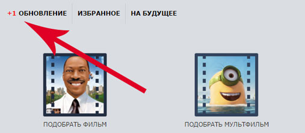
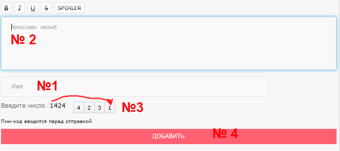
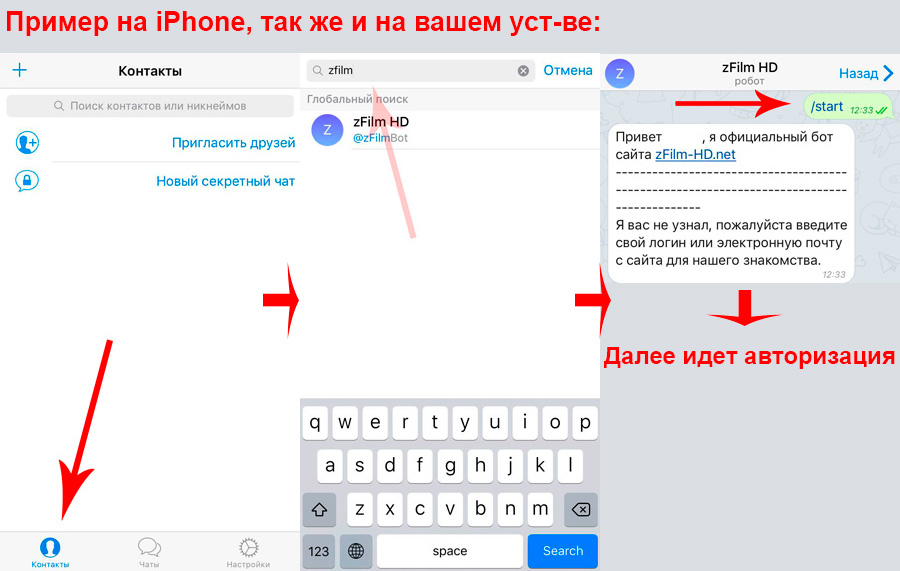
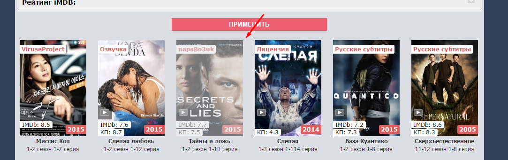
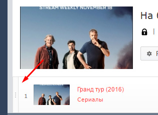
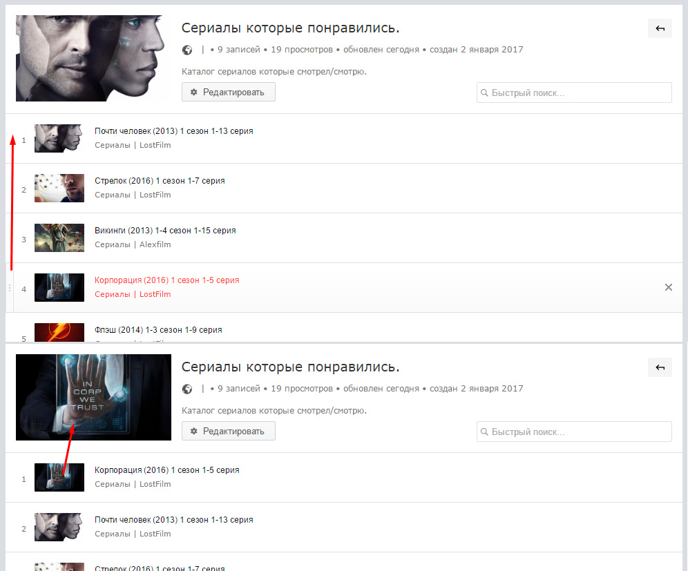

Информация о функциях сайта и решения проблем
Плеер адекватно работает в актуальных браузерах: Firefox, Opera, Google Chrome, Chromium, Яндекс Браузер и Safari.
0. Как отметить просмотренную серию?
1. Что за кнопка "отслеживать"?
2. Как вводить пин-код?
3. Как включить субтитры?
4. Как вставлять СПОЙЛЕРЫ?
5. По просьбе правообладателя, этот плеер заблокирован для вашей страны.
6. Как отслеживать серии на телефоне или планшете?
7. Зарегистрировался через социальную сеть, как узнать пароль?
8. Где у некоторых материалов описание?
9. Уже смотрел - как работает?
10. "Запомнить время" как это работает?
11. "+Добавить в" что это?
12. Что делать, если отображается надпись "Внимание! при работе сервиса произошла ошибка. (50x)"?
13. Вместо плеера белый экран?
14. Зачем выводится мой IP адрес под постером?
15. Проблемы с воспроизведением на устройствах под Android, iOS или Windows Phone?
16. Прыгает качество c 1080р на 720р или притормаживает, почему?
17. Что делать, если видео не стартует и с самого начала крутится шкала загрузки (BUFFERING, БУФЕРИЗАЦИЯ)?
18. Что делать, если видео обрывается?
19. Плеер не отображается, и вместо него колесо загрузки?
20. Плеер не работает в полноэкранном режиме?
21. Что делать, если звук отстает от изображения?
если заметили ошибку или неточность, либо хотите что-то предложить - напишите нам через обратную связь, спасибо!
0. Как отметить просмотренную серию?
1. Что за кнопка "отслеживать"?
Это кнопка для того, чтобы отслеживать новые серии своих сериалов. Когда выходит новая серия у вас появляется около кнопки "Обновление"
+1.

2. Как вводить пин-код?
Всё элементарно просто, сначала вводим имя(если вы гость) или почту, затем комментарий/сообщение, потом вбиваем нужную комбинацию и жмем отправить:

3. Как включить субтитры?
У плеера с субтитрами, будет в правом нижнем углу кнопка CC, жмем на нее и выбираем Россия. Возможность включить есть только с компьютера/ноутбука и ipad/iphone.
4. Как вставлять СПОЙЛЕРЫ?
Вставляем важную информацию между [spoiler][/spoiler], пример: Ура! [spoiler]Джона Сноу[/spoiler] в новой серии Игры Престолов!
5. По просьбе правообладателя, этот плеер заблокирован для вашей страны.
Информация для ознакомления! Взята из свободных источников - интернет.
Бесплатные варианты:
Включить "
Турбо режим или VPN" в настройках браузера
Опера [Скачиваем новую версию], который
позволяет скрыть Ваше текущее местоположение (изменив Ваш IP адрес на IP страны, где разрешен онлайн просмотр
данного видео).
Если Опера не помогла, то устанавливаем/скачиваем что нибудь из этого списка
Windscribe /
TunnelBear /
ZenMate /
Browsec /
Hola /
Hotspot Shield /
Privatix /
Betternet.
Вам достаточно открыть только саму страницу на сайте,
затем отключаете смену IP и нажимаете на плеер, проходит таймер рекламы и затем спокойно смотрите на своей, большой скорости. Так как у бесплатных решений довольно ограниченная скорость.
Платный вариант:
Нам нужно 5$, за эти деньги вы получите 100-150 мбит/сек и свободный интернет, самое главное что у вас будет быстрый интернет.
1) Нам нужен сервис, который предоставляет VPS/VDS, наш выбор из тысяч сервисов, остановился на них:
OVH (VPS SSD 1) или
DigitalOcean,
потому что они выдают скорость которая указана в тарифе и не замедляет скорость даже в вечернее время, когда наступает пик по нагрузкам.
2) Выбираем любую страну (кроме
Нидерландов), затем ставим операционную систему Linux - Debian 8~ 64bit и арендуем.
3) Как получили доступ, приступаем к настройке OpenVPN - его можно ставить везде (ПК/ноуты, телефоны, планшеты).
4) Открываем
ссылку (кликаем тут)
и читаем что делать дальше, всё максимально понятно, читаем то что написано про Debian - будут вопросы, пишите на почту abuse@zfilm-hd.org настроим за считанные минуты.
P.S. На любой ваш вопрос есть ответ в google, потому что кто-то да задавал этот вопрос, допустим "через что войти в SSH" и тд, главное спрашивать поисковик коротко.
P.S.S.
VPN для себя законом не запрещено! Запрещено только сервисам, которые дают в аренду эту(VPN) услугу.
Виноваты в данной ситуации правообладатели (включая Роскомнадзор), которые запрещают показ того или иного видео для ряда стран (как правило, это Российская Федерация), поэтому просим предъявлять все свои претензии исключительно им.
6. Как отслеживать серии на телефоне или планшете?
1) Установите приложение
Telegram.
2) Открываем в приложении - контакты, там в поисковую строку вводим нашего бота
@zFilmBot и кликаем.
3) Вводим в чате /start , далее вас попросят указать свою почту от аккаунта - указываем и жмем отправить, вводим пароль - отправляем. Всё, вы авторизованы, теперь ждем новых серий =)

7. Ранее я зарегистрировался через социальную сеть, а авторизации через неё пропала - как теперь узнать пароль?
Просто восстановите пароль на ту почту, которая была указана у вас в соц.сети, а если её забыли, то напишите нам на почту abuse@zfilm-hd.org с примерными данными и мы восставим ваш аккунт. Восстановить пароль можно с помощью кнопки "Забыли пароль?" при нажатии на красную кнопку "Войти".
Эту функцию убрали, так как автор модуля пропал и мы не можем купить лицензию на новый домен.
8. Где у некоторых материалов описание?
Описание находится прям над черным плеером, по кнопке описание / трейлер
9. Кнопка "Уже смотрел"" - как работает?
При клике под постером на кнопку "Уже смотрел". Постер у этого материала будет закрашен в такой цвет(скрин ниже) при виде его, вы поймете что уже смотрели.

10. "Запомнить время" как это работает?
Сохраняет время только в том браузере, где вы его поставили. Если при закрытие ваш браузер чистит cookie/куки то запоминалка слетит. Эта функция работает для гостей и посетителей.
11. "+Добавить в" что это?
[!] Это кнопка для добавлении в личный или публичный плейлист.
[!] Личный - видите только вы, а публичный - вы можете поделиться ссылкой со своим другом и ему не нужна будет авторизация на сайте, чтобы увидеть ваш плейлист.
[!] Внутри плейлиста можно передвигать материалы как вам удобнее, например делать хронологию и т.д., слева от постера будет кнопка для перемещения. При добавлении нового материала, он будет перемещен в самый низ, чтобы не сбивать вашу "хронологию" (скрин ниже).

[!]
В своем профиле можно сделать сортировку плейлистов по алфавиту (Да/Нет).
[!] Можно еще сменить постер, переместив нужный материал на самый верх и обновив страницу (скрин ниже).

12. Что делать, если отображается надпись "Внимание! при работе сервиса произошла ошибка. (50x)"?
Если заметили надпись: "
Внимание! При работе сервиса произошла ошибка. (50X)", то это значит, что наши сервера немного перегружены. Подождите минуту и просто обновите страницу.
В любом случае,
13. Вместо плеера белый экран?
Пробуем в порядке очередности:
1) Чистим кеш браузера;
2) Нажимаем Ctrl+F5;
14. Зачем выводится мой IP адрес под постером?
Роскомнадзор часто пишет с требованием о закрытие плеера для РФ, либо правообладатели из Украины. Затем наши пользователи используют нерабочие расширения для смены IP адреса, а если у них не получается сменить IP, потом начинают нам на почту писать различные гадости. Для этого мы вставили функцию - отображения вашего IP, эти данные видите только вы! Это поможет вам увидеть, с какой страны вы подключись и получилось ли изменить ваш IP-адрес.
15. Проблемы с воспроизведением на устройствах под Android, iOS или Windows Phone?
Android: Мы предоставляем сервис доставки видеоконтента по технологии HLS. К сожалению, не все версии операционной системы работают корректно с данной технологией. Подробнее о работе с видеопотоком можно прочитать
здесь.
iOS:
Если Вы используете браузер Chrome, то настоятельно рекомендуем отключить "Сокращение трафика" (Reduce Data Usage). Для отключения сжатия трафика необходимо зайти в «Настройки» браузера Chrome, выбрать пункт «Контроль трафика» и деактивировать «Сокращение трафика».
Windows Phone: На данный момент не весь видеоконтент, представленный на сайте, возможно воспроизвести на устройствах с использованием данной операционной системой. Но мы работаем над тем, чтобы это исправить.
16. Прыгает качество c 1080р на 720р или притормаживает, почему?
Качество упало до 720р из-за нагрузок на сервера в вечернее время, когда наступает пик.
Возможные причины притормаживания:
1) сервер, на котором расположено видео, перегружен в данный момент;
Нажмите на паузу и подождите буквально минуту, затем продолжите просмотр.
2) низкая скорость вашего интернет-канала, либо канал загружен другим процессом (для комфортного просмотра видео рекомендуется скорость интернета не ниже 2 мбит/сек). Учтите, что часто реальная скорость вашего интернет-канала гораздо меньше заявленной вашим провайдером;
Нажми на паузу и подожди минуту, затем продолжи просмотр.
Также можно попробовать выбрать меньшее качество видео, это ускорит загрузку. Для этого воспользуйтесь кнопкой плеера слева от регулятора громкости: 360p (обычное), 480p (хорошее), 720p (отличное).
17. Что делать, если видео не стартует и с самого начала крутится шкала загрузки (BUFFERING, БУФЕРИЗАЦИЯ)?
Обновите страницу нажатием Ctrl+F5 и повторно начните просмотр видео.
Хотим обратить внимание, что порой антивирусы ошибочно блокируют адреса наших серверов с видео (особенно Dr.Web). Попробуйте отключить на время антивирус и повторить попытку просмотра видео.
В любом случае, пожалуйста, сообщите об этом нам через обратную связт!
18. Что делать, если видео обрывается?
1. Если у Вас ошибка: "Type Error - Error #1009" или "Упс! Кажется что-то пошло не так: Видеофайл не найден", то попробуйте обновить страницу и продолжить просмотр.
2. Браузер использует место на системном диске (обычно это диск "С"), поэтому необходимо удостовериться, что сейчас на нем достаточно свободного места (это как минимум 2ГБ).
3. Необходимо увеличить объем дискового кэша в Вашем браузере:
Google Chrome
1. Кликнуть правой кнопкой мыши на ярлык браузера Google Chrome, выбрать "Свойства".
2. В поле "Объект" в самом конце строки после слов chrome.exe нужно поставить пробел и вставить: --disk-cache-size=1073741842
3. Нажать «OK».
4. Закрыть браузер, если открыт. И запустить его только с помощью ярлыка, в котором были проделаны предыдущие шаги.
Mozilla Firefox:
1. В меню браузера (кнопка с тремя полосками в правом верхнем углу) необходимо выбрать: "Настройки" > "Дополнительные" > "Сеть".
2. Снять галочку с "Отключить автоматическое управление кэшем".
3. В поле "Использовать под кэш не более" установить значение 1024 МБ на диске.
4. Нажать «OK».
Opera:
1. В меню браузера (логотип в верхнем левом углу) необходимо выбрать: "Инструменты" > "Общие настройки" > "Расширенные" > "История" > "Дисковый кэш".
2. Выбрать в списке 400 МБ.
3. Нажать «OK».
Internet Exprorer:
1. В меню браузера (можно вызвать нажатием кнопок Alt+X) необходимо выбрать: "Свойства браузера" > вкладка "Общие" > Журнал браузера - "Параметры".
2. В поле "Используемое место на диске" установить значение 1024 МБ.
3. Везде нажать «OK».
ВАЖНО! Если проделаны все описанные выше действия, но у Вас все-равно ОБРЫВАЕТСЯ ЗАГРУЗКА ВИДЕО, значит, скорее всего, у Вас прерывается связь с нашими серверами (причин может быть много, но как правило - это динамический IP-адрес, который меняется при каждом разрыве сети). Чтобы возобновить загрузку, просто обновите страницу (Ctrl+F5) и в плеере передвиньте ползунок перемотки на то место, на котором оборвалось и нажмите на кнопку Play (►).
19. Плеер не отображается, и вместо него колесо загрузки?
1) У вас VPN/прокси с Нидерландским IP-адресом - меняйте.
2) Скорее всего у вас включен AdBlock (расширение для браузера, которое блокирует рекламу).
Помимо AdBlock могут срабатывать сторонние программы, установленные на вашем устройстве, которые также блокируют показ рекламы. Например, Adguard либо антивирус Kaspersky Internet Security с включенным компонентом "Анти-Баннер" и прочие.
В таком случае вам необходимо отключить возможность блокирования рекламы на нашем ресурсе.
Конечно же не исключен тот вариант, что возникли проблемы на нашей стороне. Мы советуем подождать буквально минуту и обновить страницу. Если ситуация не изменится, то сообщи нам, пожалуйста, через форму по ссылке.
20. Плеер не работает в полноэкранном режиме?
Причины:
1) полноэкранный режим заблокирован в настройках самого браузера;
2) устройство временно не поддерживает данную опцию в текущем состоянии.
Быстрое и временное решение: нажать F11 на клавиатуре для перехода браузера в полноэкранный режим, и развернуть плеер на весь экран, нажав соответствующую кнопку на панели плеера.
21. Что делать, если звук отстает от изображения?
Если Вы смотрите с устройства под управлением Android, то это частая проблема и решение только одно - обновлять страницу, пробовать запускать видео и проверять есть отставание или нет. После нескольких попыток можете нас уведомить, чтобы мы лично проверили.
Связь с Администратором:
kanannb@outlook.com
Пожалуйста, описывайте проблему конкретнее. Какой у вас браузер/версия. Через какое устройство сидите и так далее, чтобы мы могли понять и оперативно решить проблему.